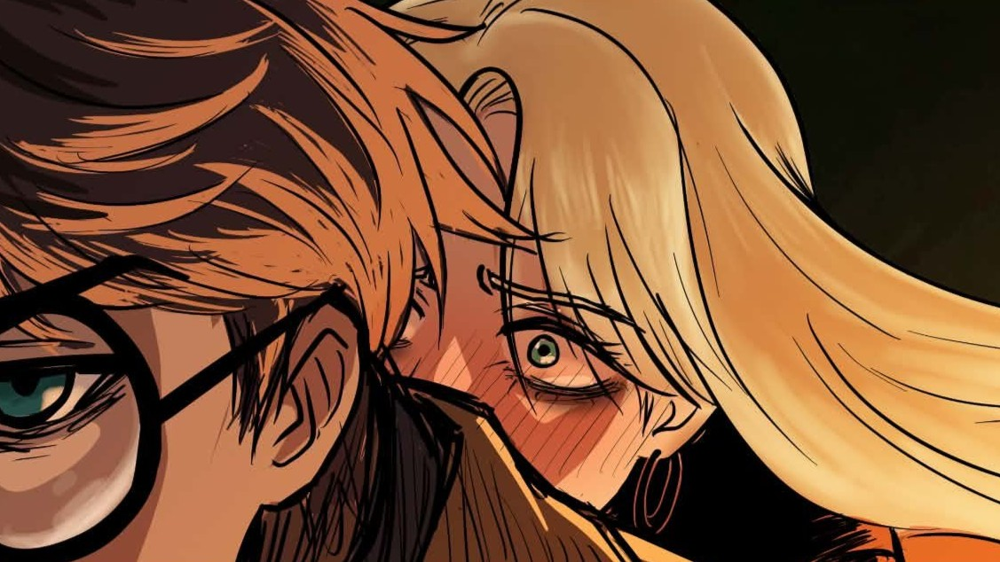

Fiendfyre is cursed fire: a Dark curse that conjures flames shaped like beasts, which hunt whatever lives and destroy whatever they touch. It grows as it burns, it is almost impossible to control, and once loose it cannot be put out with water or with any ordinary charm. It is also one of the very few things that can destroy a Horcrux, because what it burns cannot be mended.
On the night of the Battle of Hogwarts in 1998, , who had learned it in the Carrows’ lessons, loosed it in the Room of Hidden Things and lost hold of it. It killed him and , burned Ravenclaw’s diadem and the Mirror of Erised, and nearly killed before pulled her out., “The Room of Requirement”
Nature
A fire that hunts
Fiendfyre does not burn like ordinary fire. Its flames take the shapes of living things, serpents, dragons, chimaeras and great birds of prey, and they move as though they mean to. They lunge at whatever is alive, chase whatever runs, and devour whatever stands in their way. The more the fire consumes, the larger and hungrier it grows.
Control
The curse is easy to start and very hard to hold. A caster must keep their will on it every moment it burns, and the fire pulls against them as it grows. A skilled and steady witch or wizard can keep it small and point it where it is wanted. Anyone less than that soon finds the fire choosing its own way, and turning on whoever is nearest, its caster included. That is why so few have ever dared to use it, and why most of those who have are remembered for what it did to them.
How it ends
Once Fiendfyre is out of its caster’s control, nothing ordinary will put it out. Water turns to steam in it, and the usual charms against fire do nothing. It ends in only two ways: its caster masters it again and lets it die, or it runs out of things to burn. A caster who has lost it, or died in it, cannot call it back, so it burns until there is nothing left.
Destroying Horcruxes
A Horcrux can only be destroyed by something so destructive that the object it lives in is past any repair: basilisk venom is one, and Fiendfyre is another. Most witches and wizards would never think of using it for the purpose, because the cure is nearly as dangerous as the disease. Hermione Granger, who knew of it from her reading, said afterwards that she would never have dared.
The one Horcrux Fiendfyre is known to have destroyed was Rowena Ravenclaw’s lost diadem, in the Room of Hidden Things in 1998, and it did so by accident.
History
The Carrows’ lessons (1997–1998)
Under Severus Snape’s headship, Amycus Carrow taught the Dark Arts at as a subject in its own right, and his keenest pupils were Crabbe and Goyle, who took to the Cruciatus Curse as readily as he could have wished., “Hogwarts Under Snape” It was there, or from the Carrows privately, that Crabbe learned to call up Fiendfyre. Nobody taught him how to hold it.
The Room of Hidden Things (1998)

Dracaena Malfoy had felt the dark coming off a tarnished diadem in the Room of Hidden Things all through the year she spent mending the Vanishing Cabinet there. On the night of the battle she went back to destroy it. Crabbe and Goyle followed her in, meaning to stop her and to make her pay, and by then she knew what they had done to ., “Worlds Apart”
She beat Goyle back and would not kill him. Crabbe, losing, reached for a fire he could not hold. The Fiendfyre roared up through the centuries of hidden things piled in the room, tore free of him, and swallowed him and Goyle both. It took the diadem with them. In the heart of the blaze Dracaena glimpsed an old mirror showing her herself and Harry, and then the flames took that too.
Harry, Ron and Hermione had come to the room for the diadem as well. Harry pulled Dracaena out of the fire. No one was left alive who could tell the Dark Lord what she had done.
Afterwards
With its caster dead, the fire burned until there was nothing left. The Room of Hidden Things, and everything students and staff had hidden there over a thousand years, burned to nothing. The Room of Requirement itself survived. It is the castle’s own magic, as old as Hogwarts and older than any curse cast inside it, and what it was lay beyond the fire’s reach. It would become other rooms again for whoever needed them.
Related magic
- : Fiendfyre is one of the few things that can destroy one.
- The Room of Requirement: the castle’s answer to need, which outlasted the fire that consumed the Room of Hidden Things.
- : burned in the Room of Hidden Things in 1998.
- Dumbledore’s fire in the cave: in 1997 Albus Dumbledore held off the Inferi with a ring of conjured fire he never once lost hold of, the opposite of a caster losing control.
- : another Dark curse in a student’s hands that did more than its caster understood.
Etymology
The name joins fiend, an old word for a devil or demon, with fyre, an archaic spelling of fire: “the devil’s fire,” or fire with a will of its own.
Changes from Canon
- Dracaena goes to the Room of Hidden Things to destroy the diadem herself; Crabbe and Goyle follow her, not Harry.
- Goyle dies in the Fiendfyre along with Crabbe.
- Harry pulls Dracaena out of the fire.
- The Mirror of Erised is burned in the Room of Hidden Things.
- The Room of Requirement survives the fire; only the Room of Hidden Things is lost.
Appearances
Trivia
- Fiendfyre destroyed a Horcrux by accident, cast by someone who would never have wanted it destroyed.
- The last thing the Mirror of Erised ever showed anyone was Dracaena’s heart’s desire: herself and Harry, and nothing else. It had shown her the same in her fourth year, the winter of the Yule Ball.
- Crabbe and Goyle had told their fathers where to find Ada Khumalo on the night she was killed. Dracaena learned it at the Manor that Christmas, and still would not kill Goyle when she had the chance.
- Because both of them died in the fire, no one survived to tell Voldemort that Dracaena had turned against him.
Behind the scenes
- The infobox picture is official art from Pottermore, the original Wizarding World website.
- In the books Fiendfyre is never given an incantation; Crabbe simply calls it up. The films show it as towering flame-beasts sweeping through the Room of Hidden Things.
- The page quote is a placeholder from canon. It will be replaced with a line from the Memory once it is written.